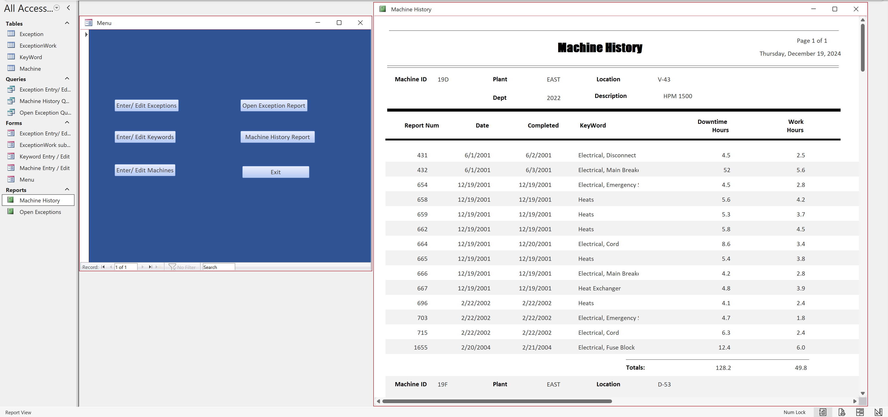
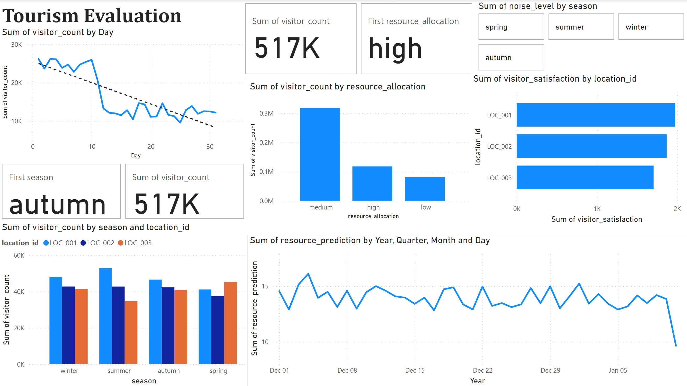

I created a Microsoft Access database to keep record of maitenance done in a mock company. Utililzing SQL and Microsoft Access skills, I created various queries, reports, and forms for multiple datasets with over 100 rows. I also created a GUI to streamline usage and allows for adding, removing, and/or accessing data. Download Database

placeholder. Download
I created a mock social media platform that allows for users to find, friend, block, remove, and direct message other users using Java. It also provides a login system and user information backed up by a database. Direct messaging was accomplished through multithreading and sockets. All features are fully complimented with GUIs using Java Swing and AWT.
Led a team of 3 to set up a client/server architecture mimicking a growing local hospital by using VMware’s suite of tools (vCenter, vSphere, etc.). My team and I set up a system of virtual machines, ESXi servers, DFS domains, etc.. A Windows system with roaming desktops, server redundancy, data backups, sites, and various other features to streamline business operations was also created.
Led a team of 4 to create a mock system for an emergency response system to streamline emeregency call response and data management. Completed use cases based on business requirements in sprints under the Agile methodology.